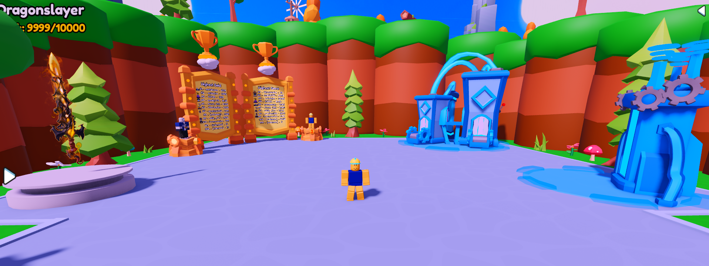
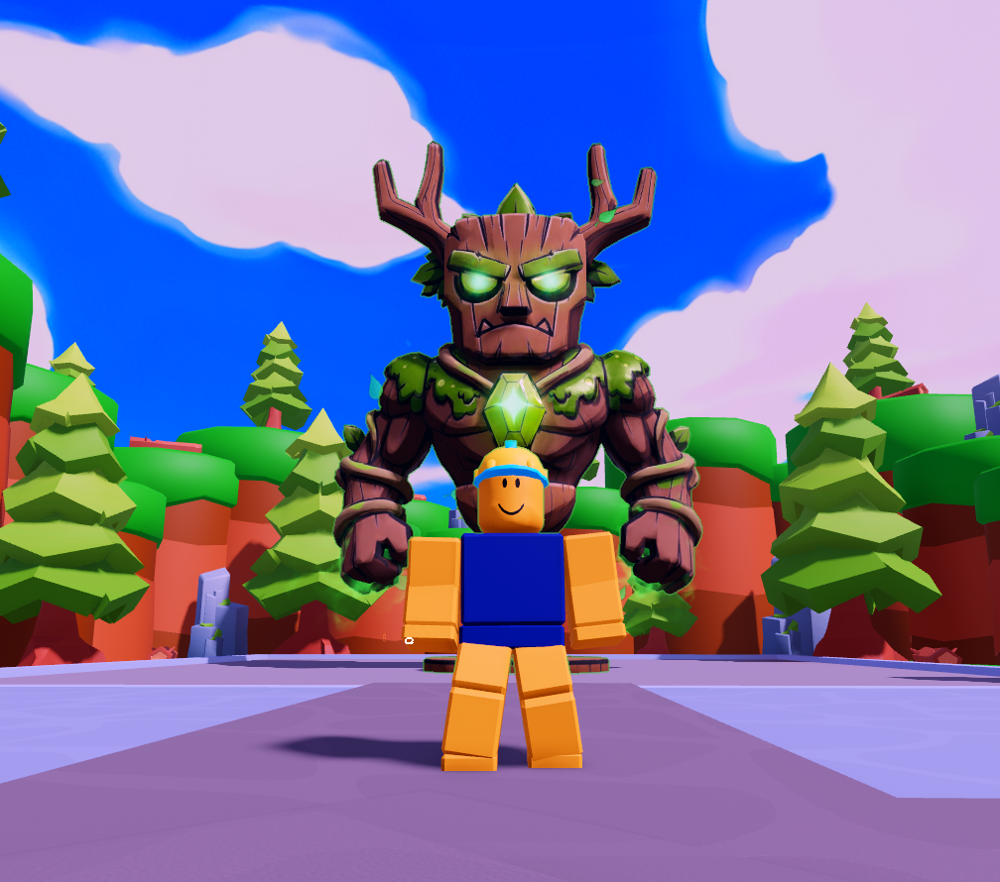
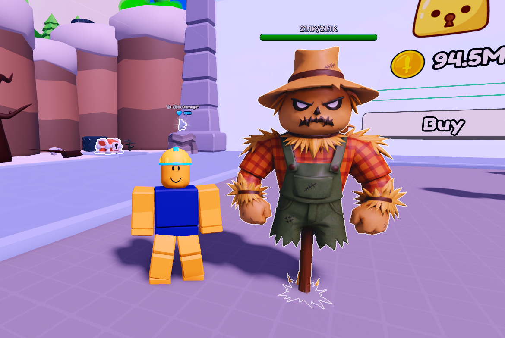
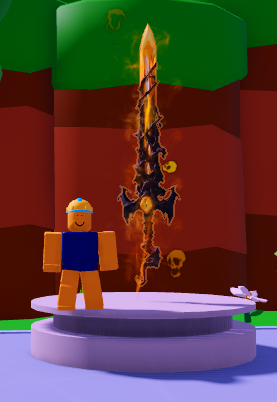

⚔️ Weapon X Simulator — Official Release
It's finally here. After months of development, Weapon X Simulator is live on Roblox and ready for you to jump in. Collect mythic swords, fight your way through zones, and become the most powerful warrior on the server. Here's everything waiting for you at launch.
🏆 The Hub — Your Home Base

The hub is where it all starts. From here you can check the global leaderboard — a permanent record of the top players' all-time gold and gem highs — and head through portals into the world. Think you have what it takes to crack the top 10?
📦 Chest Opening

Crack open chests to discover new weapons ranging from common blades to rare mythic swords. The rarer the chest, the better the loot. Grind your gold and gems and keep rolling — that legendary drop is waiting for you.
🔀 Weapon Merging & Upgrading
Stacking duplicates? Don't trash them — merge them. Combine two of the same weapon to forge a stronger version. Once you've got the one you want, push it even further through the upgrade system. The ceiling is high, so keep climbing.
👹 Area Bosses

Each area has its own boss — a towering enemy with serious HP and hard-hitting moves. Defeat them for a shot at special loot drops and exclusive boss chest weapons that can't be found anywhere else. Some of the rarest weapons in the game only drop from boss chests.
🌍 Fight Through 45 Stages & Zones

At launch there are 45 stages and zones to fight through, each with its own enemies, atmosphere, and challenges. We're just getting started — more zones are coming in future updates, so the grind never stops.
⏳ Limited Time Weapons — Once They're Gone, They're Gone

Limited time weapons are live right now with finite stock. Once the stock hits zero, that weapon is gone permanently — it will never return. The Dragonslayer is one of the first limited weapons available at launch with only 10,000 in existence. If you want it, get it now before it's history.
🌟 A Word From Us
This game exists because of the community behind Moon Incremental. You showed up, supported the game, sent feedback, and kept playing — and that support is what made it possible to build something new.
Without you guys and all your support this wouldn't be possible — thank you! ❤️
We genuinely mean it. This one's for you.